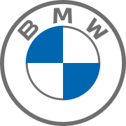
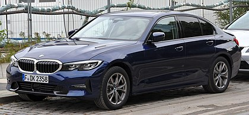
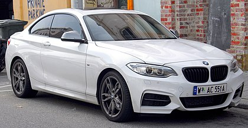
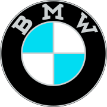
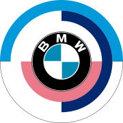

Welcome BMW Page

a
CONTACTE
HOME
CONNEXION
-
Bayerische Motoren Werke AG, abbreviated as BMW German pronunciation: (listen), is a German multinational manufacturer of luxury vehicles and motorcycles headquartered in Munich, Bavaria. The corporation was founded in 1916 as a manufacturer of aircraft engines, which it produced from 1917 until 1918 and again from 1933 to 1945.
- .Automobiles are marketed under the brands BMW, Mini and Rolls-Royce , and motorcycles are marketed under the brand BMW Motorrad. In 2017, BMW was the world's fourteenth-largest producer of moto vehicles, with 2,279,503 vehicles produced.[2] The company has significant motor-sport history, especially in touring cars, sports cars, and the Isle of Man TT
-
1-series five-door hatchbacks (model code F40). A four-door sedan variant (model code F52) is also sold in China
-
2-series two-door coupes (model code G42), "Active Tourer" five-seat MPVs U06 and four-door "Gran Coupe" fastback sedans (model code F44).
-
3-series four-door sedans (model code G20) and five-door station wagons (G21) garantie. Assurance perte financière à souscrire
-
Modèles d'avant guerre
- BMW 3/15, 749 cm3 : 1929-1932
- BMW 3/20, 782 cm3 : 1932-1934
- BMW 303, 1 173 cm3 : 1933-1934
- BMW 309, 845 cm3 : 1934-1936
- BMW 315, 1 490 cm3 : 1934-1937
- BMW 315/1, 1 490 cm3 : 1934-1936
- BMW 319, 1 911 cm3 : 1935-1937
- BMW 319/1, 1 911 cm3 : 1935-1936
- BMW 320, 1 971 cm3 : 1937-1938
- BMW 321, 1 971 cm3 : 1938-1950
- BMW 325, 1 971 cm3 : 1937-1940
- BMW 326, 1 971 cm3 : 1936-1941
- BMW 327, 1 971 cm3 : 1937-1941
- BMW 328, 1 971 cm3 : 1937-1939
- BMW 329, 1 911 cm3 : 1936-1937
- BMW 332, 1 971 cm3 : 1939-1940
- BMW 335, 3 485 cm3 : 1939-1941
- BMW 337, 3 485 cm3 : 1940


LOGO BMW 1936-1989

BMW 1936-1963
BMW 1963-1997

BMW 1970-1989
| Modèle | Période | Code moteur | Type | Puissance | Cylindrée |
|---|---|---|---|---|---|
| 2009 - | N47D20 | L4 | 116 ch | 2,0 l turbo | |
| 118d | 2004 - 2007 | M47TU2D20 | L4 | 122 ch | 2,0 l turbo | 120d | 2005 - 2007 | M47TU2D20 | L4 | 163 ch | 2,0 l turbo |